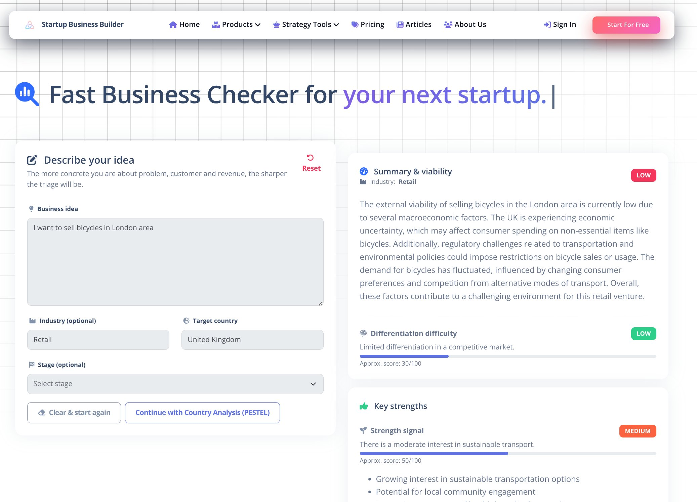

One company. Five live routes. A cleaner way to build and run real businesses.
Dhruvi Infinity Inspiration Ltd. connects live software for new founders, Innovator Founder Visa cases, shift planning, warehouse control, and finance operations, with a growing knowledge layer for smarter decisions next.
Choose a product if you already know the route, follow the journey if you want the connected ecosystem view, or ask DII for guidance if you are deciding between founder, IFV, operations, or finance needs. The buyer-fit cards below also jump straight to the closest route.
New founders
Closest route
Validate ideas, structure plans, and move toward launch with
a clearer business-building route.
Visa-focused founders
Closest route
Prepare evidence, venture logic, and endorsement-facing
founder readiness in one focused flow.
Operators and finance teams
Closest routes
Support shifts, stock visibility, invoicing, payments, and
reporting inside the wider DII workspace.
Live now
5 live routes
Founder planning, IFV preparation, operations, and
finance paths are all visible now.
Named inboxes
General, sales, support, legal, and IFV-specific contact
routes are already listed.
London HQ
86-90 Paul Street, EC2A 4NE is shown directly on the
homepage.
Growing next
The knowledge layer expands after the live software
routes, not instead of them.
Five live routes already cover founder planning, IFV, operations, and finance
Startup Business Builder, IFV Builder, Rotaplan, Warewise, and DII Accounts can all be explored today, with direct contact routes and a public London HQ already visible on the homepage.


One ecosystem for clearer launches, operations, and finance control
DII brings the product family into one place so founders can make stronger early decisions, operators can reduce daily friction, and growing teams can keep finance and reporting under better control.
Startup Business Builder, IFV Builder, Rotaplan, Warewise, and DII Accounts are available today for direct exploration.
Guides, solution pages, and explainers are being shaped to help people recognise the right route earlier and arrive with a clearer brief before they need software or support.
Make earlier founder decisions with more confidence
Use structured tools to test viability, understand the market, and decide whether an idea is worth shaping into a real venture.
Turn vague ambition into a plan people can act on
Move from broad goals to strategy, forecasts, and launch-ready documentation that supports real next steps.
Reduce day-to-day coordination friction
Support workforce planning and warehouse control with practical systems that make shifts, stock, and movement easier to follow.
Keep money flow and reporting more controlled
Bring invoicing, payments, reporting, and organisation-level finance workflows into one workspace that is easier to run consistently.
Next route
Choose the closest next route from the platform view.
If one of these outcomes matches your situation, jump straight to the most relevant product or guidance layer instead of scanning the full page first.
Startup Business Builder and IFV Builder help founders move from uncertainty to validation, structure, and readiness.
Rotaplan and Warewise help teams keep shifts, stock, and warehouse activity more visible and easier to manage.
DII Accounts brings invoicing, payments, reporting, and accountancy work into one clearer operating layer.
The growing knowledge layer is being shaped to help visitors recognise the right route before they contact or click through.
The DII product family
Choose by starting point: validating a business idea, preparing an Innovator Founder Visa case, planning team shifts, controlling warehouse stock, or organising finance operations. Each route below shows who it is for, the main problem it solves, and the outcome it is designed to deliver.
Startup Business Builder, IFV Builder, Rotaplan, Warewise, and DII Accounts can all be opened directly from this page.
General, sales, support, legal, and IFV-specific contact routes are all visible on the homepage.
The site lists 86–90 Paul Street, London, EC2A 4NE as the company address alongside the wider ecosystem routes.
New founder idea
Use Startup Business Builder to validate and shape a business
concept.
IFV-ready venture case
Use IFV Builder for endorsement-oriented founder preparation.
Team shift planning
Use Rotaplan for rotas, allowances, and workforce coordination.
Warehouse stock control
Use Warewise for inventory visibility and warehouse movement
control.
Finance operations
Use DII Accounts for invoicing, payments, and reporting.
Need help choosing?
Start one guided enquiry and DII will route you to the right
team.
Live operations route
Rotaplan is the route for workforce coverage, rotas, and
allowance-aware planning.
Use it when the main job is organising people across shifts, weekly changes, and day-to-day manager coordination.
- Shift coverage stays visible across the week.
- Allowance-related planning stays in the same workflow.
- Team updates stay separate from stock or finance tasks.
Live warehouse route
Warewise is the route for stock visibility, movement tracking,
and warehouse control.
Use it when the main job is keeping inventory, locations, and back-of-house activity visible as operations grow.
- Stock location visibility stays easier to follow.
- Movement and handling activity stays clearer.
- Warehouse control stays distinct from rota planning.
Startup Business Builder
Live platformA founder planning system for turning an early business idea into a clearer plan, launch path, and next set of decisions.
For
Early-stage founders testing or structuring a business idea.
Problem
You need more than general advice to turn scattered thinking
into a workable business plan.
Outcome
Move forward with clearer validation, strategy, forecasts,
and launch direction.
-
Idea validation, strategy frameworks, forecasts, and launch planning in one route -
Useful when the business model is still taking shape and needs structure -
Gives founders a stronger foundation before launch, hiring, or wider operations setup
IFV Builder
Live routeA specialised founder-preparation route for people shaping an Innovator Founder Visa-ready venture case.
For
Founders preparing for the UK Innovator Founder Visa route.
Problem
You need founder planning and endorsement-oriented case
preparation to work together.
Outcome
Build a stronger venture case with clearer evidence, logic,
and founder readiness.
-
Built for founders combining venture planning with Innovator Founder Visa preparation -
Supports evidence logic, founder readiness, and endorsement conversations -
Separates visa-case work from general founder planning without disconnecting them
Rotaplan
Live platformA workforce coordination tool for managers who need clearer rotas, allowances, and day-to-day shift planning.
For
Service teams and managers running shift-based operations.
Problem
You need cleaner rota planning and fewer coordination gaps
across the week.
Outcome
Keep shifts, allowances, and people organisation more
controlled day to day.
-
Built for managers coordinating shifts, people coverage, and allowances -
Useful when spreadsheets or ad hoc messages are slowing daily scheduling -
Keeps workforce planning separate from warehouse control and finance tasks
Warewise
Live platformA warehouse control route for teams that need stock accuracy, movement visibility, and cleaner back-of-house operations.
For
Warehouse and stock-handling teams in growing operations.
Problem
You need visibility across stock, movement, and warehouse
workflows.
Outcome
Run warehouse activity with clearer inventory control and
fewer blind spots.
-
Built for teams managing stock locations, movement, and warehouse visibility -
Useful when warehouse operations outgrow manual or low-visibility processes -
Keeps inventory control distinct from shift scheduling and finance reporting
DII Accounts
Live MVPA UK-focused finance workspace for organisations that need invoicing, payments, reporting, and day-to-day accountancy operations in one place.
For
UK organisations that need a practical finance and
reporting workspace.
Problem
You need invoicing, payments, and reporting out of
scattered admin and into one clearer system.
Outcome
Keep day-to-day finance operations and reporting in one
workspace connected to the wider DII ecosystem.
-
Designed around organisation-first account access and a clearer membership model -
Brings invoicing, payments, and reporting into one UK-focused workspace -
Keeps finance operations distinct from founder planning and warehouse execution while staying connected
A cleaner flow from idea to operations and finance
Follow how people move through DII: start with the business need, find the right path, and move into tools that support planning, operations, finance, and long-term growth.
This flow shows how DII turns scattered business questions into a clearer next step, then into working systems and ongoing support.
Step 01
Start with a business need, idea, or growth challenge
People arrive with different starting points: an early idea, a visa pathway, a scheduling problem, an operations challenge, or a finance process that needs structure.
-
Founders can begin with business structure and validation -
Operators can move directly to rota, warehouse, or accountancy workflows -
DII helps route them to the right system without unnecessary guesswork
1
Path overview
Founder path
Validate and plan
Start with business structure, launch logic, and
clearer early decisions.
Visa path
Prepare with evidence
Use endorsement-aware guidance for founder readiness
and case preparation.
Operations path
Run the day-to-day
Move straight into rota planning, stock visibility,
and execution support.
Finance path
Control money flow
Bring invoicing, payments, and reporting into one
clearer accountancy workspace.
Founder, visa, operations, and finance paths start here
DII helps people recognise their entry point before they choose a product or contact route.
Live route proof
Live founder route
Startup Business Builder
Business validation, planning structure, and clearer
launch decisions for new founders.
 Live visa route
IFV Builder
Founder-case preparation with Innovator Founder Visa
context and evidence logic.
Live operations route
Rotaplan
Shift planning, team coverage, and allowance-aware
coordination for day-to-day operations.
Live warehouse route
Warewise
Stock visibility, warehouse movement, and cleaner
back-of-house control.
Live finance route
DII Accounts
Invoicing, payments, reporting, and accountancy
operations in one workspace.
Live visa route
IFV Builder
Founder-case preparation with Innovator Founder Visa
context and evidence logic.
Live operations route
Rotaplan
Shift planning, team coverage, and allowance-aware
coordination for day-to-day operations.
Live warehouse route
Warewise
Stock visibility, warehouse movement, and cleaner
back-of-house control.
Live finance route
DII Accounts
Invoicing, payments, reporting, and accountancy
operations in one workspace.
Five live routes already turn the journey into real product paths
This part of the journey is not abstract. Startup Business Builder, IFV Builder, Rotaplan, Warewise, and DII Accounts already map the main founder, visa, operations, warehouse, and finance routes.

2
Step 02
Choose the best path inside the ecosystem
Once the visitor understands their context, they can move into the right flow: business building, visa preparation, scheduling, warehouse operations, or finance control.
-
Startup Business Builder for early founder validation, planning, and launch structure -
IFV Builder for venture cases that also need Innovator Founder Visa preparation -
Rotaplan for shift planning and Warewise for stock and warehouse control -
DII Accounts for invoicing, payments, reporting, and accountancy operations
Step 03
Build structure, evidence, and operational clarity
DII helps people move from uncertainty to structured action with guided workflows, clearer evidence, and better operational visibility.
-
Frameworks and guided steps reduce random work -
Operational tools reduce manual friction in day-to-day business -
DII Accounts adds finance operations to the same lifecycle
3
Product snapshot
 Startup Business Builder
Validation, planning, and launch structure.
Startup Business Builder
Validation, planning, and launch structure.
IFV Builder
Founder-case preparation with endorsement context.
Rotaplan
Shift planning, team coverage, and allowance-aware
organisation for operations teams.
Warewise
Stock visibility, warehouse movement, and
back-of-house control for growing operations.
DII Accounts
Invoicing, payments, reporting, and accountancy
operations.
See founder planning, operations routes, and finance in one flow
Startup Business Builder, IFV Builder, Rotaplan, Warewise, and DII Accounts each solve a different stage of the journey while staying connected.
Content layer
A growing knowledge center can strengthen every product decision
As DII expands the knowledge center, articles, guides, visa-path content, and solution pages can help people understand the problem before they commit to a product.
4
Step 04
Support growth with a knowledge center that is still expanding
Helpful content builds trust, supports earlier discovery, and helps visitors make better product decisions as the public knowledge layer grows.
-
Educational articles can attract discovery traffic and build authority -
Solution pages can explain which DII tool fits which business problem -
Guides help visitors understand before they buy or sign up
Step 05
Expand into a connected business operating system
The ecosystem is structured so planning, execution, finance, and learning can work together as the business grows.
-
Founders begin with planning and validation -
Businesses stay for operations, finance, and learning support -
The same ecosystem can support teams beyond the first launch stage
5
Ecosystem view
Founders
Plan and launch
Start with validation, structure, and stronger next
steps.
Operations
Coordinate execution
Keep shifts, stock, and movement visible as teams
grow.
Knowledge
Guide decisions
Use explainers and solution content to support better
choices.
Finance
Track and report
Keep invoicing, payments, and reporting inside the
same wider system.
One brand with connected business layers
The product family connects founder support, operations systems, finance tools, and knowledge under one company.
A growing knowledge center for clearer product decisions
The knowledge layer is the next public layer DII is expanding. It is being shaped around example guides, solution pages, and search-oriented questions so people can discover the ecosystem, compare routes, and return when they are ready for software or support.
Growing next
Live software routes are already available above. The knowledge
center is the next public layer being expanded.
What the knowledge center is being built to help answer
A structured content layer being shaped around the real questions founders, operators, and finance teams search before they choose a tool, route, or support conversation.
Business guides
Questions like how to validate a startup idea, build a
plan, or move from concept to launch structure.
Visa pathways
Search-oriented explainers around founder readiness,
endorsement logic, and Innovator Founder Visa preparation.
Solution center
Route-specific comparisons such as rota planning for
service teams, warehouse workflow control, or
invoicing-and-reporting cleanup.
Discovery + trust
Search-led content that helps people find DII earlier and
understand the right next step before they contact or
click through.
Growing layer
Show the search question, then show the route.
This content layer is being shaped around founder, visa,
operations, and finance questions that can route people
into the right DII product or conversation.
Example discovery paths
Search-style questions this layer is being shaped to answer
These are example query directions, not a fully live
article library yet.
What DII stands for in practice
These principles explain the result DII is aiming for across the ecosystem: clearer decisions, usable outputs, smoother handoffs, and less wasted learning time.
Structured thinking
The goal is fewer false starts, cleaner decisions, and a next action people can actually follow.
Practical delivery
People should leave with something usable: a stronger plan, a clearer case, a workable workflow, or a finance process they can run.
Connected systems
Planning, operations, finance, and reporting should support one another instead of creating new silos and handoff gaps.
Learning built in
Guidance should shorten the time it takes to understand the problem, choose the right route, and use the system well.
Choose a route or start one conversation
You do not need to know the perfect team before your first email. Use a named inbox if you already know the route, or use the guided enquiry below to prepare one clear starting brief for the right DII inbox.
General contact
- contact@dii.ltd
- Best for partnerships, introductions, general company enquiries, or first contact when you are not yet sure which DII team should reply.
Sales
- sales@dii.ltd
- sales.ifv@dii.ltd
- Use for demos, product questions, or commercial discussions.
Support
- support@dii.ltd
- support.ifv@dii.ltd
- Use for user issues, account access, product help, and platform support.
Legal & specialist
- legal@dii.ltd
- contact.ifv@dii.ltd
- Use for legal enquiries, formal correspondence, and IFV-specific contact.